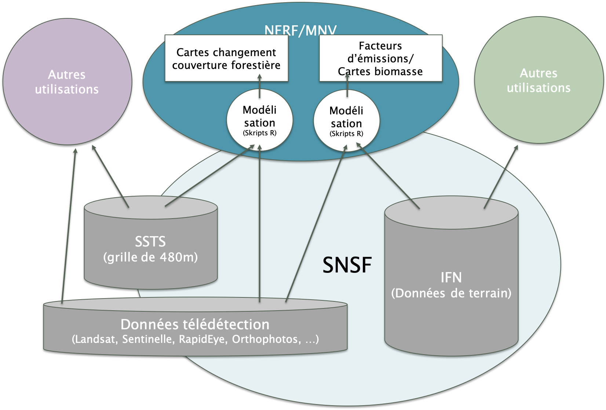
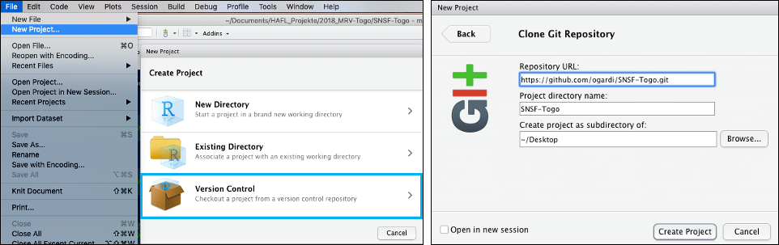
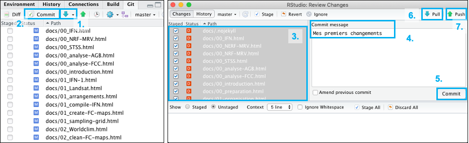
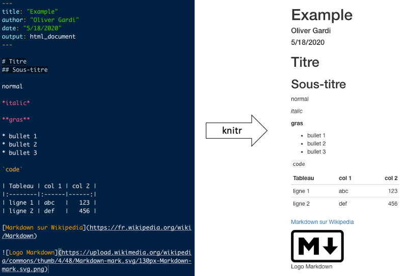
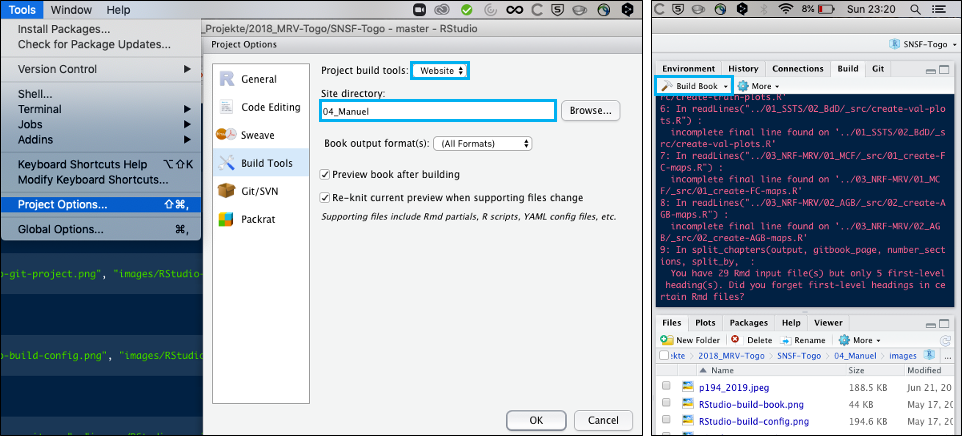

République Togolaise —
Système Nationale de Surveillance des Forêts
Système Nationale de Surveillance des Forêts
Manuel de référence
2020-06-10

Préface
Ce manuel de référence à comme objectif de décrire le fonctionnement du Système National de Surveillance des Forêts au Togo (SNSF). Les éléments traités sont les arrangements instutitionelles, l’implémentation de l’Inventaires Forestier National (IFN) et de Système Surveillance Terrestres par Satellite (SSTS) et l’approche technique pour en sortir les informations nécessaires pour le Niveau de Référence pour les Forêts du Togo (NRF) ainsi que pour le Monitoring, Reporting et Verification (MRV) dans le cadre de l’engagement du Togo pour le REDD+.
La partie Analyses NRF/MRV décrit en détail les outils utilisés pour établir et le Niveau de Référence pour les Forêts du Togo 1.0, soumis au sécrétariat CCNUCC en Janvier 2020 et pour mettre à jour les analyses dans le cadre d’une surveillance de la biomasse forestier continue dans le cadre du Monitoring, Reporting et Verification pour la REDD+. Les résultats de ces analyses sont publiés ailleurs (liens sur les rapports sur le site CCNUCC et géoportail).
En cas de questions, veuillez contacter la Coordination nationale REDD+ du Togo
1 Introduction
L’objectif du Système National de Surveillance des Forêts (SNSF) est d’évaluer régulièrement l’état des forêts togolaises et leur évolution. Dans le code forestier du Togo, la forêt est définie comme:
un espace occupant une superficie de plus de 0,5 hectare avec des arbres atteignant une hauteur supérieure à 5 mètres et un couvert arboré de plus de 10 pour cent, ou avec des arbres capables d’atteindre ces seuils in situ.
Pour l’évaluation du développement des zones forestières, le SNSF distingue entre terres forestières avec un couvert des houppiers ≥ 30% et les terres boisées avec un couvert des houppiers entre 10% – 30%.
Actuellement, sur base des images Landsat, le SNSF enregistre que l’évolution des terres forestiers avec une couverture des houppiers ≥ 30%. Des données satellitaires de plus haute resolution seront nécessaires pour évaluer également les terres boisées.
Le SNSF combine les données recueillies sur le terrain avec les données des images satellites pour fournir des informations sur lévolution du l’ensemble des forêts dans le pays. Comme illustré dans l’image au-dessous et décrit dans les sections suivantes, le SNSF consiste de trois pilliers principaux:
Le Inventaire Forestier National (IFN) recueille des informations détaillées sur l’état des forêts sur un nombre limité de placettes d’échantillonnage permanentes sur le terrain.
Au moyen du Système de Surveillance Terrestre par Satellite (SSTS), des informations sur la couverture et l’utilisation des sols sont recueillies sur un grand nombre de parcelles d’échantillonnage à partir d’images satellites. Avec l’aide du SSTS, les informations sur l’IFN peuvent être extrapolées à l’ensemble du pays.
Le Niveau de Référence des Forêts (NRF) ainsi que le Monitoring, Reporting et Vérification (MRV) des changements dans le réservoirs carbone forestiersest une applications du SNSF pour informer la communauté internationale sur l’engagement du Togo dans le cadre du mécanisme REDD+. Dans ce cadre, les données de la IFN sont utilisées pour déterminer le stockage du carbone dans la biomasse des arbres, tandis que les données de la SSTS sont utilisées pour déterminer le changement de la superficie forestière. Ensemble, cela se traduit par les pertes de carbone dues à la déforestation et la séquestration du carbone provenant du reboisement.

En future, d’autres sources de données pourraient être intégrées au SNSF, telles que
- le carbone organique du sol (prévu à rélever dans l’IFN-2)
- feux de brousse (base de données SANGE)
- dégradation des forêts (utilisation des images de haute résolution Sentinel-2)
- droits fonciers
- plantations
- exploitation du bois
- …
Pour l’avenir, il est également prévu d’impliquer la population locale dans la surveillance des forêts, par exemple en signalant les activités irrégulières à l’aide d’une application pour smartphone.
1.1 Arrangements institutionelles
L’arrangement institutionnel propose pour le système national de suivi des forêts se presente comme ci-dessous.

Coordination:
Le Ministère de l’Environnement, du Developpement Durable et de la Protection de la Nature (MEDDPN) à travers la Direction de l’Environnement (DE) est chargée de la soumission des rapports (Communication Nationale et Rapports Biennaux) à la Convention Cadre des Nations Unies sur le Changement Climatique (CCNUCC).
La Cellule MRV de la Coordination nationale REDD+ située a l’ODEF est responsable de la coordination de toutes les institutions et organisations impliquées dans l’alimentation du système SNSF. Cette cellule est l’entité clé chargée de faciliter et de soutenir les communications sur NRF/NERF du Togo.
Le Groupe de travail NERF/MRV et l’équipe nationale de suivi des forêts sont chargés du travail et des décisions et choix techniques sur les données, résultats et méthodologie adoptés pour le NRF/MRV. C’est la cheville ouvrière de la cellule MRV. Elles sont constituées des cadres des institutions qui interviennent dans le système national de suivi des forêts (SNSF).
La Direction de l’Environnement (DE) se charge des inventaires de gaz à effet de serre (I-GES) de tous les secteurs mais assure la cohérence des données d’I-GES du secteur agriculture, foresterie et autres affectations des terres (AFAT) avec les rapports qui seront soumis à la CCNUCC. La DE se chargera d’assurer la cohérence entre la méthodologie utilisée dans le cadre du NRF avec les données d’I-GES du secteur AFAT.
Données d’activités:
L’Unité de gestion de bases de données cartographiques (UGBDC) de la Direction des études et de la planification (DEP), chargée de la gestion de la cartographie des domaines forestiers du Togo ainsi que la Division cartographie et Télédétection (DCT) de l’Officie de développement et d’exploitation des forêts (ODEF) chargée de la cartographie des forêts classées et plantations étatique se chargeront de produire les données d’activités à travers le système de suivi des terres par satellite (SSTS).
L’Agence nationale de gestion de l’environnement (ANGE) est chargée de fournir les données sur les feux de végétation.
Facteurs d’émission:
- La cellule de gestion de la base des données des ressources forestières et des résultats de l’inventaire forestier national (CBDR-IFN) de la Direction des ressources forestières (DRF) et la Division cartographie et télédétection (DCT) de l’ODEF sont chargé de produire les facteurs d’émission à travers les inventaires forestier nationaux et les inventaires des plantations.
Données complémentaires:
la Direction générale de l’énergie du ministère des mines et énergie DGE/MME se chargera de fournir les données sur la consommation en bois énergie.
la Direction de la Statistique agricole de l’Informatique et de la Documentation (DCID) et l’Institut Togolais de Recherche Agronomique (ITRA) produiront des données sur l’agriculture (superficie emblavées et le cheptel).
les données de recherche des universités du Togo alimenteront le mécanisme MRV ainsi que le NRF.
L’Institut national de la statistique et des études économiques et démographiques (INSEED) donnera des compléments d’informations sur la démographie et autres.
Contrôle de qualité / validation interne:
- L’assurance qualité et le contrôle qualité se fera à travers l’évaluation indépendante interne du Laboratoire de biologie et écologie végétale (LBEV) et le Laboratoire de recherche forestière (LRF) de l’université de Lomé (LBEV/UL) ainsi que la Direction générale de la cartographie (DGC). Les laboratoires universitaires LRF et LBEV évalueront les méthodes et nouveaux données au fur et à mesure qu’ils seront générés.
1.2 Pour commencer
1.2.1 Travailler avec le SNSF
1.2.1.1 Installation R et RStudio
Le traitement des données au sein du SNSF est principalement basé sur les scripts R (R Project for Statistical Computing). Pour pouvoir travailler avec ces scripts, vous devez disposer d’une installation de R. En outre, l’installation des paquets suivants est nécessaire dans R :
install.packages("sp", "rgdal", "raster", "randomForest", "caret", "openxlsx",
"dplyr", "tidyr", "ggplot2", "foreach", "doParallel", "knitr",
"rmarkdown", "tinytex")Les scripts R dépendent des fois des outils GDAL disponible dans l’environnement. Sur les systèmes Linux, ceux-ci peuvent être installés en utilisant `apt-get install python-gdal’.
Comme interface utilisateur graphique pour R, nous recommandons l’installation de RStudio.
1.2.1.2 Se connecter avec GitHub
Le code SNSF-Togo se trouve sur un dépôt du code GitHub (https://github.com/ogardi/SNSF-Togo). Pour copier le code sur votre ordinateur, vous pouvez dans RStudio créer un nouveau projet à partir d’un dépôt Git comme illustré dans la figure ci-dessous.

Git vous permet de vous synchroniser avec le dépôt sur GitHub. En appuyant sur le bouton “Pull” (point 1. dans la figure ci-dessous), vous mettez à jour votre code local avec le dépôt du code sur GitHub.

Pour modifier vous-même le code sur GitHub, vous devez disposer d’un compte GitHub et d’une autorisation du gestionnaire du dépôt. La procédure à suivre pour apporter des modifications au code est la suivante.
Avant faire des modifications dans le code:
- synchroniser avec le dépôt sur GitHub en utilisant le bouton “Pull” (tirer)
De temps en temps, pendant le travail:
confirmer les modifications apportées au code en appuyant sur le bouton “Commit”. Une nouvelle fenêtre s’ouvrira.
sélectionner les fichiers à confirmer (CTRL-A) et les marquer (ESPACE)
joindre un message (ce qui a été modifié)
confirmer les modifications apportées au code en appuyant sur le bouton “Commit” (confirmer)
synchroniser de nouveau avec GitHub (et résoudre les éventuels conflits)
télécharger les modifications sur GitHub en utilisant le bouton “Push” (pousser)
1.2.1.3 Travailler sur la documentation
Ce manuel de référence fait également partie du dépôt du code sur GitHub. Cela signifie que pour réviser la documentation, vous devez procéder comme décrit ci-dessus.
La documentation a été créée dans Markdown, une syntaxe simple pour la structuration et le formatage des documents. Ces documents Markdown sont ensuite traduits en HTML par le paquet R knitr pour générer un site web.

Le répertoire 04_Manuel contient les documents Markdown (fichiers .Rmd), le répertoire docs contient le site web résultant (fichiers .html).
Dans RStudio, le site web peut être généré en utilisant le bouton “Build Book”. Pour ce faire, il faut d’abord spécifier le répertoire dans lequel se trouvent les fichiers Markdown dans les configurations, comme indiqué dans la figure ci-dessous.

1.2.2 Structure du répértoire
Les outils R dépendent d’une certaine structure des fichiers. Le répértoire de base SNSF_Togo est structuré comme suivant:
SNSF_Togo
=========
├── data # Données de base externes ####################
├── GADM # :: frontières administratives
├── Landsat # :: images satellitaires
├── SRTM # :: données topographiques
└── Worldclim # :: données climatiques
└── SNSF_v1.0_20200106 # Répértoire SNSF v1.0 ########################
├── .Rprofile #:: Script R de initialisation
├── 01_SSTS # SYSTÈME DE SURVEILLANCE TERRESTRE =========
├── 01_data #:: images et autres données pré-traités --
└── 02_BdD #:: base de données SSTS ------------------
├── 02_IFN # INVENTAIRE FORESTIER NATIONAL =============
└── 01_IFN-1 #:: données d'inventaire IFN-1 ------------
├── 03_NRF-MRV # NIVEAU DE REFERENCE / MRV ================
├── 01_MCF #:: Modification Couvert Forestier --------
├── 02_AGB #:: cartographie biomasse -----------------
└── 03_report #:: rapport NRF/MRV -----------------------
├── 04_Manuel # CETTE DOCUMENTATION DU SNSF =============
└── docs #:: site web manuel de référence
└── SNSF_v1.x # Répértoire SNSF version actualisé ###########
├── ...
└── ...
La structure du répertoire est définit dans le script R .Rprofile et peut être ajousté.
C’est seulement les répétoires src et manual qui sont mis à diposition dans le dépôt GitHub. Les autres répétoires et données doivent être installés manuellement.
1.2.3 Création d’un nouveau projet
Pour la création d’un nouveau projet avec le code le plus actuel, on clone le dépôt du projet sur GitHub par la commande git clone --single-branch https://github.com/ogardi/NERF-Togo.git NOM-REPERTOIRE. L’installation d’une version spécifique peut être fait avec git clone -b VERSION --single-branch https://github.com/ogardi/NERF-Togo.git NOM-REPERTOIRE.
En travaillant avec RStudio, le plus facile est de créer directement un projet RStudio au départ due dépôt GitHub (File > New Project ... > Version Control > Git) avec les mêmes paramètre que l’installation directe en haut.
Dans une prochaine étape, les données doivent être rendues disponibles, soit par une nouvelle acquisition, soit par une copie des répertoires existants.
- S’il n’est pas encore disponible, le répertoire
../data/doit être créé et les données de base correspondantes doivent être fournies. - Dans le répertoire
./01_SSTS/02_BdD/, le réseau d’échantillonnage ainsi que les données d’entraînement et de validation doivent être stockées. - En outre, les données d’inventaire doivent être stockées dans le répertoire
./02_IFN/.
1.2.4 Définition des variables
Le traitement des images ainsi que les différentes analyses se font via des R-Scripts. Les variables et les fonctions utilisées dans les différents scripts sont définit dans le fichier .Rprofile, qui est automatiquement chargé au démarrage de R. Si le processus de chargement a réussi, vous pouvez voir un message de bienvenue suivant sur la console R.
Si aucun message n’apparaît, assurez-vous que a) R est lancé dans le répertoire et b) qu’aucun message d’erreur ne se produit. Les messages d’erreur possibles sont des paquets manquants (les paquets correspondants doivent être installés en premier) ou le fait de ne pas trouver les limites administratives de GADM dans ../data/GADM (doivent également être installés en premier).
Si nécessaire les variables sont ajustées et R est redémarré. Notamment les informations sur la période analysée YEARS.ALL et les années à prendre en compte pour les différentes évaluations YEARS.JNT, YEARS.VAL et YEARS.REF.
Script R: .Rprofile
###############################################################################
# .Rprofile: Préparer l'environnement (libraries, variables)
# -----------------------------------------------------------------------------
# Bern University of Applied Sciences
# Oliver Gardi, <oliver.gardi@bfh.ch>
# 13 Mai 2020
# Charger libraries ==========================================================
library("sp") # Classes et méthodes pour les données spatiales
library("rgdal") # Geospatial Data Abstraction Library
library("raster") # Analyse et modélisation des données géographiques
library("randomForest") # Algorithme de classification et régression
library("caret") # Outils pour classification et régression
library("openxlsx") # Lire et écrire des fichiers Excel (xlsx)
library("dplyr") # Fonctions pour manipuler des données
library("tidyr") # Fonctions pour reorganiser des données
library("ggplot2") # Production des figures
library("RColorBrewer") # palettes de couleurs
library("foreach") # Faire des calcules en parallèle ...
library("doParallel") # ... sur plusieurs processeurs
library("knitr") # pour la documentation html
# Créer un environnement caché ===============================================
.snsf = new.env()
# Années / Périodes -----------------------------
.snsf$YEARS.ALL <- 1985:2019 # - tous
.snsf$YEARS.JNT <- c(1987, 2003, 2005, 2007, 2015, 2017, 2018) # - conjointes
.snsf$YEARS.REF <- c(1987, 2003, 2015, 2018) # - référence
.snsf$YEARS.NRF <- c( 2003, 2015, 2018) # - NRF
# Répertoires -----------------------------------
.snsf$DIR.RAW.DAT <- "../data"
.snsf$DIR.SST <- "./01_SSTS"
.snsf$DIR.SST.DAT <- paste0(.snsf$DIR.SST, "/01_data")
.snsf$DIR.SST.DAT.LST <- paste0(.snsf$DIR.SST.DAT, "/Landsat")
.snsf$DIR.SST.DAT.WC2 <- paste0(.snsf$DIR.SST.DAT, "/Worldclim")
.snsf$DIR.SST.BDD <- paste0(.snsf$DIR.SST, "/02_BdD")
.snsf$DIR.SST.BDD.GRD <- paste0(.snsf$DIR.SST.BDD, "/01_reseau-SSTS")
.snsf$DIR.SST.BDD.TPS <- paste0(.snsf$DIR.SST.BDD, "/02_train-plots")
.snsf$DIR.SST.BDD.VPS <- paste0(.snsf$DIR.SST.BDD, "/03_val-plots")
.snsf$DIR.IFN <- "./02_IFN"
.snsf$DIR.IFN.DAT <- paste0(.snsf$DIR.IFN, "/01_field-data")
.snsf$DIR.MRV <- "./03_NRF-MRV"
.snsf$DIR.MRV.MCF <- paste0(.snsf$DIR.MRV, "/01_MCF")
.snsf$DIR.MRV.MCF.REF <- paste0(.snsf$DIR.MRV.MCF, "/01_ref-maps")
.snsf$DIR.MRV.MCF.RAW <- paste0(.snsf$DIR.MRV.MCF, "/02_raw-maps")
.snsf$DIR.MRV.MCF.CLN <- paste0(.snsf$DIR.MRV.MCF, "/03_cln-maps")
.snsf$DIR.MRV.MCF.VAL <- paste0(.snsf$DIR.MRV.MCF, "/04_validation")
.snsf$DIR.MRV.AGB <- paste0(.snsf$DIR.MRV, "/02_AGB")
.snsf$DIR.MRV.AGB.REF <- paste0(.snsf$DIR.MRV.AGB, "/01_ref-maps")
.snsf$DIR.MRV.AGB.RES <- paste0(.snsf$DIR.MRV.AGB, "/02_results")
# Système de référence des coordonnées ----------
.snsf$UTM.30 <- crs("+proj=utm +zone=30 +datum=WGS84
+units=m +no_defs +ellps=WGS84 +towgs84=0,0,0")
.snsf$UTM.31 <- crs("+proj=utm +zone=31 +datum=WGS84
+units=m +no_defs +ellps=WGS84 +towgs84=0,0,0")
# Domaine d'intérêt ----------------------------
.snsf$TGO <- spTransform(
readOGR(paste0(.snsf$DIR.RAW.DAT, "/GADM/gadm36_TGO_0.shp")),
.snsf$UTM.31
)
snsf$TGO.REG <- spTransform(
readOGR(paste0(.snsf$DIR.RAW.DAT, "/GADM/gadm36_TGO_1.shp")),
.snsf$UTM.31
)
.snsf$TGO.EXT <- extent(151155, 373005, 670665, 1238175) # xmin, xmax, ymin, ymax
# Noms des couches de données -------------------
.snsf$SST.LSBANDS <- c("B", "G", "R", "NIR", "SWIR1", "SWIR2",
"evi", "msavi", "nbr", "nbr2", "ndmi", "ndvi", "savi")
.snsf$SST.BIOCLIM <- paste0("BIO", 1:19)
# Codes pour les classes ------------------------
.snsf$NONFOR <- 0 # non-forêt
.snsf$PREGEN <- 1 # régénération potentielle
.snsf$REGEN <- 2 # régénération
.snsf$FOREST <- 3 # forêt / forêt initiale
# Divers ----------------------------------------
# Processeurs disponibles pour le calcul parallèle
.snsf$CORES <- detectCores()
# Semence pour le générateur de nombres aléatoires
.snsf$RSEED <- 20191114
# Attacher l'environnement
attach(.snsf)
# Message de bienvenue =======================================================
message("
=> chargé librairies et variables définit en .Rprofile
.oPYo. o o .oPYo. ooooo ooooo
8 8b 8 8 8 8
`Yooo. 8`b 8 `Yooo. o8oo 8 .oPYo. .oPYo. .oPYo.
`8 8 `b 8 `8 8 8 8 8 8 8 8 8
8 8 `b8 8 8 8 8 8 8 8 8 8
`YooP' 8 `8 `YooP' 8 8 `YooP' `YooP8 `YooP'
:.....:..:::..:.....::..::::::::..:::.....::....8 :.....:
:::::::::::::::::::::::::::::::::::::::::::::ooP'.:::::::
:::::::::::::::::::::::::::::::::::::::::::::...:::::::::
\n",
date(),
"\n"
)